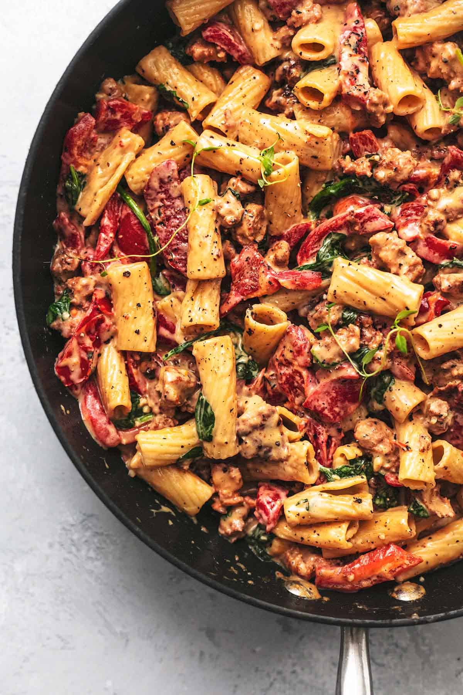

Tuscan Sausage Pasta

Description
This creamy, decadent, and simple pasta dish is sure to transport you to the Italian countryside.
Ingredients
- 12oz rigatoni pasta
- 1tsp olive oil
- 1lbs ground Italian sausage
- 2tbs butter
- 4tsps minced garlic
- 2tbs flour
- 1 1/2 cups chiken broth
- 1 cup heavy cream
- 1/2 cup shredded parmessan cheese
- salt to taste
- 1/2tsp black pepper
- 1/4tsp crushed red pepper
- 1 red bell pepper, chopped
- 1 cup baby spinach
Steps
- Boil pasta for 8-9 minutes, toss with olive oil, and set aside.
- In a skillet, brown sauage for 5-7 minutes, and add bell pepper cooking for 3-4 more minutes. Transfer to dish and cover.
- Melt butter in skillet, stir in garlic for 1 minute
- Stir in flour, then whisk in chicken broth, followed by heavy cream and parmessan. Add red pepper flakes, salt and pepper.
- Stir in pasta, sauasage, bell pepper, and spinach
- Simmer for five more minutes, and serve.
Take Me Home